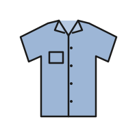

Content
- Photo alt text counts from 1 and includes the total.
- Sellers order photos; the first is the cover and also the card photo.
- No captions: condition notes belong in the description and the flaws note.
Component · 12L brand
The listing's photos: one large 4:5 image, a strip of square thumbnails to switch it, and position dots on phones.
The gallery leads the listing detail page. Sellers upload up to 8 photos (the uploader, see file upload); the strip shows the first six. Photos are the buyer's main evidence of condition, so the main image is as large as the column allows and never cropped.

.gallery__main: 4:5 .photo, image at 72% width, alt names the position..gallery__dots: position indicator, phones only, aria-hidden..gallery__thumbs: 64px square buttons; the current one has a 2px ink outline.

The gallery fills its column; there is one size.
| Part | Default | Hover | Focus | Current |
|---|---|---|---|---|
| Thumbnail |
<div style="width: 12rem;"><section class="gallery" aria-busy="true" aria-label="Loading photos"><span class="skeleton skeleton--photo"></span></section>
</div>
| Viewport | Layout |
|---|---|
| < 640px | Main photo bleeds to the screen edges; thumbnails scroll horizontally inside the margins; dots under the photo. |
| 640–1023px | Main photo inside the margins; thumbnails and dots. |
| ≥ 1024px | Left column of the two-column detail (7 of 12 columns); dots hidden; thumbnails stay. |
Backdrops stay light in both themes (see photo). Dots use --color-border-strong and the current dot --color-fg-default, widened to 20px so position is shown by shape as well as colour. The current thumbnail outline is --color-fg-default.
A <section aria-label="Photos">. Thumbnails are buttons in a list; the current one has aria-current="true". Dots are decorative (aria-hidden) because the thumbnails already expose the position.
| Key | Action |
|---|---|
| Tab | Moves through the thumbnail buttons. |
| Enter / Space | Shows that photo in the main frame; focus stays on the thumbnail. |
Shared ring with 2px offset around the thumbnail; distinct from the 2px current outline because the ring sits outside it.
Thumbnail buttons: Show photo 2 of 5. Main photo alt: Photo 2 of 5, Red Wing Iron Ranger 8111 boots. Thumbnail images have empty alt (the button names them).
Swipe follows the finger; the main image swaps without a cross-fade so nothing animates under reduced motion.
Thumbnails are 64px square with 8px gaps.

aria-current and an outline.| Part | Token | Light | Dark |
|---|---|---|---|
| Current thumbnail outline | --color-fg-default | ||
| Dot / current dot | --color-border-strong / --color-fg-default | ||
| Gaps | --space-2 / --space-3 | / | |
| Phone bleed | --layout-margin | ||
| Focus ring | --color-focus-ring | ||
<section class="gallery" aria-label="Photos">
<div class="gallery__main"><div class="photo photo--1"><img src="items/boot.svg" alt="Photo 1 of 6, Red Wing Iron Ranger 8111 boots"></div></div>
<div class="gallery__dots" aria-hidden="true"><span aria-current="true"></span><span></span>…</div>
<ul class="gallery__thumbs" role="list">
<li><button type="button" aria-label="Show photo 1 of 6" aria-current="true"><div class="photo photo--1"><img src="items/boot.svg" alt=""></div></button></li>
…
</ul>
</section>| Class / attribute | Effect |
|---|---|
.gallery | Column with main, dots and thumbs; bleeds on phones. |
.gallery__main | Main 4:5 photo. |
.gallery__thumbs | Horizontal strip of 64px buttons. |
.gallery__dots | Phone position dots (hidden from 1024px). |
aria-current="true" | Current thumbnail and dot. |
Extracted from these mocks:
Drift fixed during extraction: the gallery's 36rem bleed and 62rem dots breakpoints snapped to 40rem (sm) and 64rem (lg).